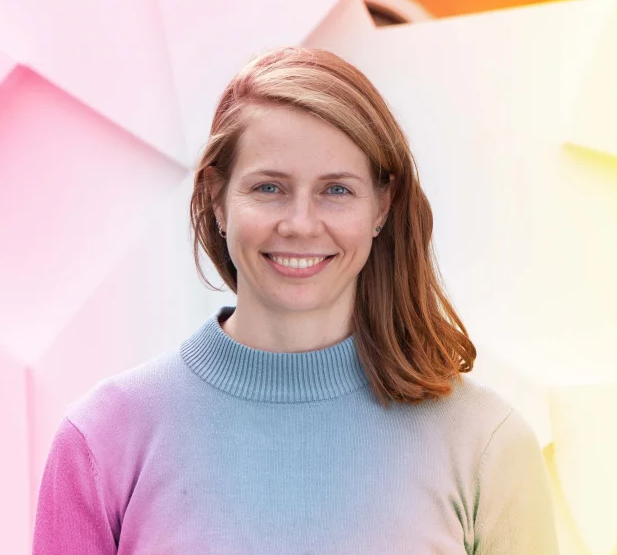

Assistant Professor @ INDElab, University of Amsterdam
I work on human-data interaction for scholarly applications, at the intersection of knowledge engineering, hybrid intelligence, and e-Science. I develop methods, workflows, and tools that help scholars and researchers make their multimodal data and findings machine-readable for reuse and reproducibility, with applications in cultural heritage, biodiversity, chemistry, and the social sciences.
ISWC, ESWC, HHAI, EKAW, K-CAP, ECAI, TheWebConf